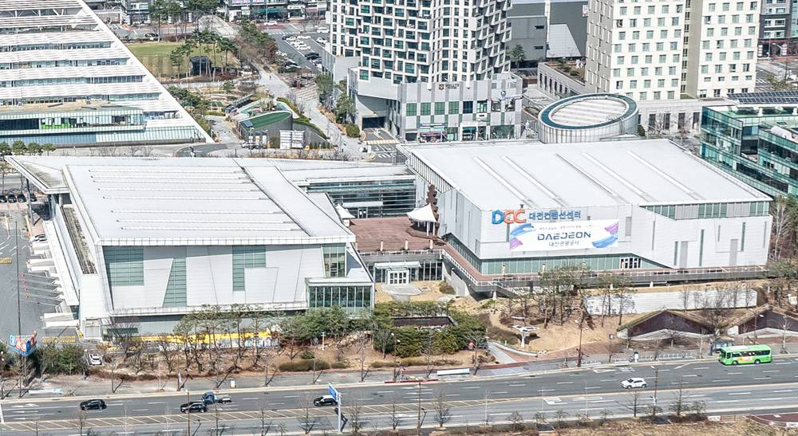

대전시, 17일 세계태양광총회 특별세션 포럼…에너지연·한전KDN과 분산에너지 협약 예정

2부 '태양광의 가치를 지역과 나누다'에서 에너지자립마을·산업단지 지붕 태양광 사례 발표 / 대전 전력자립률 1.87%(2021년)
대전시가 11월 17일 오후 대전컨벤션센터(DCC) 제1전시장에서 한국에너지기술연구원과 함께 재생에너지 정책 포럼을 연다. 포럼은 15일부터 20일까지 대전에서 열리는 제9회 세계태양광총회(WCPEC-9)의 대전시 특별세션이다. 미국·유럽·아시아 학회가 4년마다 함께 여는 이 총회가 국내에서 열리는 것은 이번이 처음이다.
1부는 건물일체형 태양광(BIPV)의 산업화 전략을 다룬다. '태양광의 가치를 지역과 나누다'를 주제로 한 2부에서는 해유사회적협동조합이 에너지자립마을 사례를, 발표 기업이 산업단지 지붕 태양광의 수익모델을 소개하고 김제선 중구청장 등이 토론에 나선다.
포럼 개회에 맞춰 대전시와 한국에너지기술연구원, 한전KDN은 분산에너지 업무협약을 맺을 예정이다. 시는 이 협약을 지역에서 만든 전기를 지역에서 쓰는 분산에너지 특화지역 지정의 발판으로 삼겠다는 계획이다. 대전시가 2024년 3월 낸 자료에 따르면 2021년 기준 대전의 전력자립률은 1.87%였다. 포럼은 시민 누구나 무료로 들을 수 있다.
시민에너지 관점
전력자립률이 낮은 대도시가 지붕과 산업단지에 눈을 돌리는 것은 옳은 방향이다. 다만 협약 주체가 시·연구기관·공기업뿐이라면 '시민 참여형'은 이름에 그칠 수 있다. 독일 도시들이 시민 에너지협동조합에 공공건물 지붕을 먼저 내주며 발전 수익을 동네에 남겼듯, 대전도 공공 지붕과 산단 지붕에 시민 출자 몫을 처음부터 정해 두어야 한다. 17일 포럼이 기술 자랑에 머물지 않고 시민이 주인이 되는 구체적인 출자 방식까지 내놓기를 기대한다.
출처: 충청매일 2026-11-10 정성진 기자 원문 보기
출처: 대전시 2024-03-20 대전시 전력자립도 계획 게시글(2021년 전력자립률 1.87%) 원문 보기
바로잡습니다(2026.11.18)이 기사는 포럼 1주일 전(11월 10일)에 쓴 예고 기사입니다. 다시 쓰는 과정에서 11월 17일 협약 체결 내용이 이미 일어난 일처럼 들어가 발행일과 맞지 않았던 것을 예고 내용으로 되돌렸습니다. 협약 체결 소식은 11월 18일 기사에 실었습니다.
大田市、17日に世界太陽光会議の特別セッションでフォーラム…エネルギー研・韓電KDNと分散型エネルギー協約へ
第2部「太陽光の価値を地域と分かち合う」でエネルギー自立村・産業団地屋根置き太陽光の事例発表 / 大田の電力自給率1.87%（2021年）
大田（テジョン）市は11月17日午後、大田コンベンションセンター（DCC）第1展示場で韓国エネルギー技術研究院と再生可能エネルギー政策フォーラムを開く。フォーラムは15日から20日まで大田で開かれる第9回世界太陽光発電会議（WCPEC-9）の大田市特別セッションだ。米国・欧州・アジアの学会が4年ごとに共同で開くこの会議が韓国で開かれるのは初めてとなる。
第1部では建物一体型太陽光（BIPV）の産業化戦略を扱う。「太陽光の価値を地域と分かち合う」をテーマにした第2部では、ヘユ社会的協同組合がエネルギー自立村の事例を、発表企業が産業団地の屋根置き太陽光の収益モデルを紹介し、キム・ジェソン中区長らが討論に臨む。
フォーラムの開会に合わせ、大田市と韓国エネルギー技術研究院、韓電KDNは分散型エネルギーの業務協約を結ぶ予定だ。市はこの協約を、地域でつくった電気を地域で使う分散エネルギー特化地域の指定に向けた足がかりにする計画だ。大田市が2024年3月に出した資料によると、2021年時点の大田の電力自給率は1.87%だった。フォーラムは市民なら誰でも無料で聴講できる。
市民エネルギーの視点
電力自給率の低い大都市が屋根や産業団地に目を向けるのは正しい方向だ。ただ協定の当事者が市・研究機関・公企業だけなら、「市民参加型」は名ばかりになりかねない。ドイツの都市が市民エネルギー協同組合に公共建物の屋根を優先して貸し、発電収益を地域に残してきたように、大田も公共の屋根と産業団地の屋根に市民出資の枠を最初から定めておくべきだ。17日のフォーラムが技術の披露にとどまらず、市民が持ち主になる具体的な出資の仕組みまで示すことを期待したい。
出典: 충청매일 2026-11-10 정성진 기자 原文を読む
出典: 대전시 2024-03-20 대전시 전력자립도 계획 게시글(2021년 전력자립률 1.87%) 原文を読む
訂正(2026.11.18)この記事はフォーラムの1週間前（11月10日）に書いた予告記事です。書き直しの過程で11月17日の協約締結がすでに起きたかのように入り、発行日と合わなかったため、予告の内容に戻しました。協約締結のニュースは11月18日の記事に掲載しています。
大田市17日举办世界光伏大会特别分会论坛…将与能源研究院、韩电KDN签署分布式能源协议
第二部分“与地方分享光伏价值”将介绍能源自立村和产业园区屋顶光伏案例 / 大田电力自给率1.87%（2021年）
大田市将于11月17日下午在大田会展中心（DCC）第一展厅与韩国能源技术研究院共同举办可再生能源政策论坛。该论坛是15日至20日在大田举行的第九届世界光伏能源转换大会（WCPEC-9）的大田市特别分会。由美国、欧洲和亚洲学会每四年联合举办的这一大会首次在韩国举行。
第一部分讨论建筑一体化光伏（BIPV）的产业化战略。以“与地方分享光伏价值”为主题的第二部分中，海宥社会合作社将介绍能源自立村案例，发言企业将介绍产业园区屋顶光伏的盈利模式，大田中区区长金济善等人将参加讨论。
论坛开幕时，大田市、韩国能源技术研究院和韩电KDN将签署分布式能源业务协议。市政府计划以此协议为基础，推动“本地发电、本地用电”的分布式能源特区指定。根据大田市2024年3月发布的资料，2021年大田的电力自给率为1.87%。论坛向所有市民免费开放。
市民能源视角
电力自给率低的大城市把目光投向屋顶和产业园，方向是对的。但如果协议主体只有市政府、研究机构和国企，"市民参与型"可能只停留在名义上。德国城市优先把公共建筑屋顶交给市民能源合作社，让发电收益留在社区；大田也应从一开始就为公共屋顶和产业园屋顶设定市民出资份额。期待17日的论坛不止于展示技术，而能拿出让市民成为主人的具体出资方案。
来源: 충청매일 2026-11-10 정성진 기자 查看原文
来源: 대전시 2024-03-20 대전시 전력자립도 계획 게시글(2021년 전력자립률 1.87%) 查看原文
更正(2026.11.18)本文是论坛一周前（11月10日）撰写的预告报道。在改写过程中，11月17日签约的内容被写成已经发生，与发布日期不符，现已恢复为预告内容。签约消息刊登在11月18日的报道中。
Daejeon to Hold World Photovoltaic Conference Special-Session Forum on Nov. 17, Plans Distributed-Energy Pact With KIER and KEPCO KDN
Second session, "Sharing the Value of Solar With the Community," to present an energy self-reliant village and industrial-park rooftop solar / Daejeon's power self-sufficiency 1.87% (2021)
The city of Daejeon will hold a renewable energy policy forum with the Korea Institute of Energy Research (KIER) on the afternoon of Nov. 17 in Hall 1 of the Daejeon Convention Center (DCC). The forum is Daejeon's special session at the 9th World Conference on Photovoltaic Energy Conversion (WCPEC-9), held in Daejeon from Nov. 15 to 20. It is the first time the conference, organized every four years by American, European and Asian societies, has come to South Korea.
The first session covers strategies for commercializing building-integrated photovoltaics (BIPV). In the second, themed "Sharing the Value of Solar With the Community," Haeyu Social Cooperative will present an energy self-reliant village and a company will present a revenue model for rooftop solar on industrial parks, followed by a panel including Jung District head Kim Je-seon.
At the opening, Daejeon, KIER and KEPCO KDN are scheduled to sign a distributed-energy agreement. The city plans to use it as a stepping stone toward designation as a distributed-energy special zone where locally generated power is used locally. According to a city document from March 2024, Daejeon's power self-sufficiency rate was 1.87% in 2021. The forum is free and open to all citizens.
Citizen Energy View
Turning to rooftops and industrial parks is the right move for a big city with low power self-sufficiency. But if the only parties to the agreement are the city, a research institute and a state-owned company, "citizen participation" risks remaining a label. Just as German cities offered public-building roofs first to citizen energy cooperatives and kept generation profits in the neighbourhood, Daejeon should reserve a citizen-investment share on public and industrial-park roofs from the outset. We hope the 17 November forum goes beyond showcasing technology and puts forward concrete ways for citizens to become owners.
Source: 충청매일 2026-11-10 정성진 기자 Read the original
Source: 대전시 2024-03-20 대전시 전력자립도 계획 게시글(2021년 전력자립률 1.87%) Read the original
Correction(2026.11.18)This is a preview written a week before the forum (Nov. 10). During a rewrite, the Nov. 17 signing of the agreement was described as if it had already happened, which did not match the publication date, so the article has been restored to a preview. News of the signing appears in our Nov. 18 article.